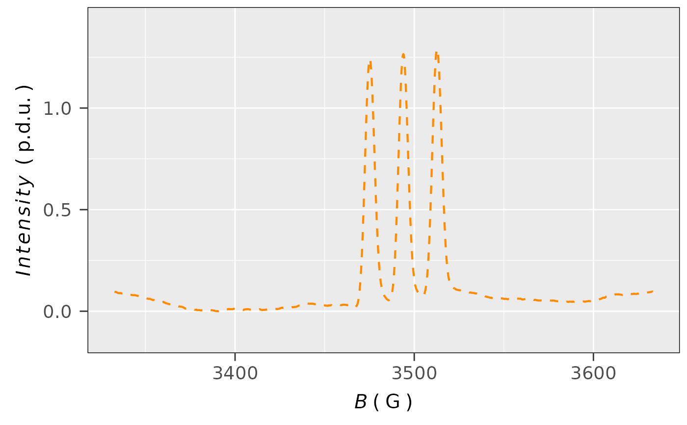
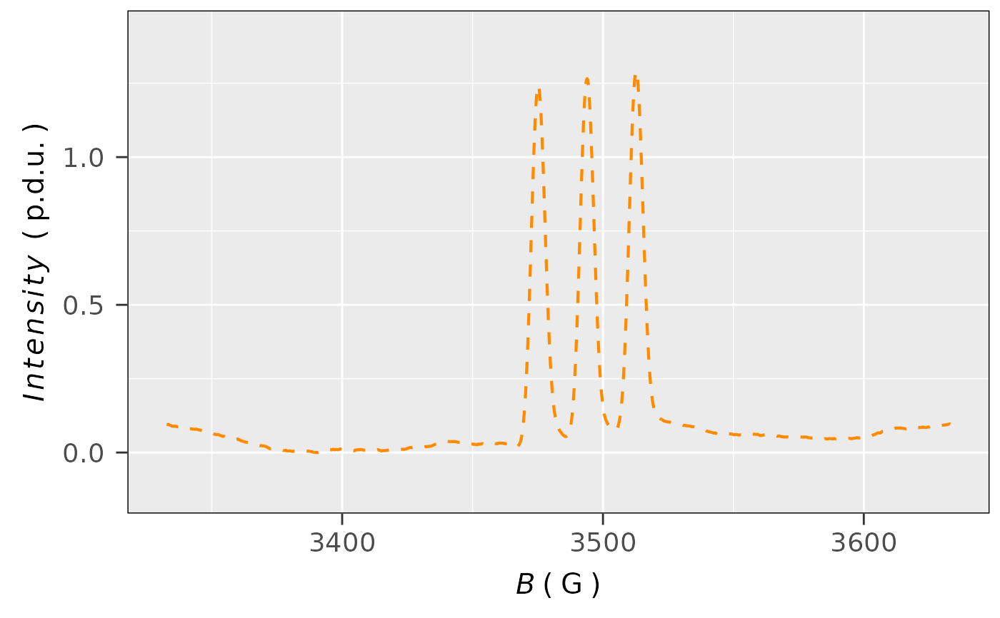

Plot of EPR/ENDOR spectrum/spectra (overlay plot) based
on the ggplot2-functionality. Spectral data input must be available
as a data frame object (see also argument data.spectra).
Theme of the visual spectrum representation as well as additional plot elements can be varied like
using the {ggplot2} package. Within a theme, the y ticks can be either displayed
or skipped (which is common for visualization of EPR spectra) and the intensity (e.g. dIepr_over_dB)
is presented in "procedure defined unit" (see p.d.u.).
Usage
plot_EPR_Specs(
data.spectra,
x = "B_mT",
x.unit = "mT",
xlim = NULL,
var2nd.series = NULL,
var2nd.series.slct.by = NULL,
Intensity = "dIepr_over_dB",
Ilim = NULL,
lineSpecs.form = "derivative",
line.colors = "darkviolet",
line.width = 0.75,
line.type = 1,
border.line.width = 0.5,
border.line.color = "black",
border.line.type = 1,
theme.basic = "theme_gray",
axis.title.size = 15,
axis.text.size = 14,
legend.title = NULL,
legend.title.size = NULL,
legend.text.size = NULL,
grid = TRUE,
yTicks = TRUE
)Arguments
- data.spectra
Data frame/table object, containing magnetic flux density, \(g\)-value or radio-frequency columns as
xvariable. They can be labeled asField,B_mT,B_GorRF_MHzsee alsoxargument. They / Intensityvariable can be labeled asdIepr_over_dB, in case of derivative intensity, or if integrated or simulated spectra intensities are present, they can be labeled accordingly. See alsoIntensityparameter/argument. For the spectral series, the second independent variablevar2nd.seriescolumn (e.g.var2nd.series = "time_s"orvar2nd.series = "T_K") must be available. In such case the entiredata.spectramust inherit the form of tidy/long table format (see also argumentvar2nd.series).- x
Character string, pointing to \(x\)-axis/column quantity header in the original
data.spectralike magnetic flux density \(B\), \(g\)-Value or \(RF\) (radio frequency), default:x = "B_mT".- x.unit
Character string, pointing to unit of
x-quantity coming from the originaldata.spectra. Units like"G"(Gauss),"mT"(millitesla),"T"(tesla),"MHz"(megahertz in case of ENDOR spectra) or"Unitless"/"unitless"(in case of \(g\)-values) can be used. Default:x.unit = "mT".- xlim
Numeric vector, referring to lower and upper limit of the selected \(x\)-region, e.g.
xlim = c(3495.4,3595.4)(\(B\) inG) orxlim = c(12.5,21.2)(\(RF\) inMHz) orxlim = c(2.004,2.001)(dimensionless \(g\)). Default:xlim = NULL(actually corresponding to the entire \(x\)-range).- var2nd.series
Character string, referred to name of the second independent variable/quantity column in the original
data.spectra(such as time, Temperature, Electrochemical Potential, Microwave Power...etc) altered upon individual experiments. Data must be available in long table / tidy format (see alsoreadEPR_Exp_Specs_multiforplot_EPR_Specs2D_interact). Default:var2nd.series = NULL. Otherwise, usuallyvar2nd.series = "time_s".- var2nd.series.slct.by
Numeric, corresponding to each \(n-th\) presented spectrum in the overlay plot, e.g. display each second (
var2nd.series.slct.by = 2) or third (var2nd.series.slct.by = 3), ...etc. spectrum. The argument is only used ifvar2nd.seriesis NOT NULL (e.g.var2nd.series = "time_s") and one wants to present DISCRETE LABELS / LEVELS for the overlay spectra (see alsoline.colorsargument). THEvar2nd.series.slct.by = 1MAY DISPLAY ALL DISCRETE SPECTRA WITHIN THE SERIES. However, the RECOMENDED MAX. NUMBER of spectra/lines IS12.- Intensity
Character string, pointing to
intensity columnname in the originaldata.spectraif other thandIepr_over_dBname/label is used (e.g. for simulated or integrated spectra), default:Intesity = "dIepr_over_dB".- Ilim
Numeric vector, corresponding to limits of the selected
y/Intensityregion, e.g.Ilim = c(-2e-3,2e-3). Default:Ilim = NULL(actually corresponding to the entire Intensity range).- lineSpecs.form
Character string, describing either
"derivative"(default) or"integrated"(in such case also"absorption"can be used) line form of the analyzed EPR spectrum/data.- line.colors
Character string, line color(s) to plot EPR spectrum/spectra. All
{ggplot2}compatible colors are allowed to plot the individual spectrum, default:line.colors = "steelblue". For the series of EPR spectra two color scales are used:Continuous. This is the case when
var2nd.seriesIS NOTNULLandvar2nd.series.slct.by = NULL. Theline.colorsargument is identical with the continuouscolorscales, i.e. with the one fromscale_colour_gradientn. Following color definitions are allowed =>any color vector like
c("blue","green","red")with the length of \(\geq 2\)any color definition from grDevices like
hcl.colors(n,pallete),rainbow(n),heat.colors(n),terrain.colors(n),topo.colors(n),cm.colors(n)where the number of colors \(n \geq 2\) should be specified. See also grDevices Palettes and HCL Color Palettes
Discrete. This is the case when both
var2nd.seriesas well asvar2nd.series.slct.byare DISTINCT FROMNULL. Following color definitions are allowed =>any color vector like
c("blue","green","red")with the length of \(\geq 2\)any color definition from
scale_color_viridis_d"option". These involveline.colors = "magma"(or ..."A"),line.colors = "inferno"(or ..."B"),line.colors = "plasma"(or ..."C"),line.colors = "viridis"(or ..."D"),line.colors = "cividis"(or ..."E"),line.colors = "rocket"(or ..."F"),line.colors = "mako"(or ..."G") andline.colors = "turbo"(or ..."H")
- line.width
Numeric, linewidth of the plot line in
mm, default:line.width = 0.75.- line.type
Character string or integer, corresponding to width of the (spectral) line(s). Following types can be specified:
0 = "blank",1 = "solid"(default),2 = "dashed",3 = "dotted",4 = "dotdash",5 = "longdash"and6 = "twodash".- border.line.width
Numeric, width (in
mm) of the plot graph/panel border line, default:border.line.width = 0.5.- border.line.color
Character string, referring to color of the plot graph/panel border line. Default:
border.line.color = "black".- border.line.type
Character string or integer, corresponding to width of the plot graph/panel border line. Following types can be specified:
0 = "blank",1 = "solid"(default),2 = "dashed",3 = "dotted",4 = "dotdash",5 = "longdash"and6 = "twodash".- theme.basic
Character string, calling a
ggplottheme base. Following themes are defined:"theme_gray"(default one) => gray background with the white grid lines
"theme_bw"=> white background with thin gray grid lines, the theme is suggested for publications
"theme_light"=> similar to
theme_bw()but without the pronounced axis black lines"theme_classic"=> without grid, pronounced axis lines, however without opposite ones
"theme_linedraw"=> pronounced axis lines (both for the origin and the opposite) as well as the grid ones, theme is suggested for publications if the
gridis set toFALSE
- axis.title.size
Numeric, axis text title size in
pt. Default:axis.title.size = 15.- axis.text.size
Numeric, text size in
ptfor the axes unit values/descriptions, default:axis.text.size = 14.- legend.title
Character string identical to legend title, e.g.
legend.title = "Time (s)",legend.title = "Electrochem. Potential (V)"orlegend.title = "Sample". Default:legend.title = NULLin case ofvar2nd.series = NULL.- legend.title.size
Numeric, legend text title size in
pt,default:legend.title.size = NULL, actually corresponding to 13/13pt.- legend.text.size
Numeric, legend text size in
pt, default:legend.text.size = NULL, actually corresponding to 11/11pt.- grid
Logical, whether to display the
gridwithin the panel/graph, default:grid = TRUE.- yTicks
Logical, whether to display the
y(Intensity) ticks and the corresponding text (not the axis title!), which is often skipped in the EPR community, default:yTicks = TRUE(the axis ticks as well as the text are present).
Value
EPR spectrum/spectra ('overlay') plot object (corresponding to list of plot components) using
the ggplot2 functionality, with the key parameter variations like line color, theme, grid...etc.
Details
Output from the plot_EPR_Specs can be additionally combined by the + sign with other
ggplot2 or internal plotting functions
(e.g. with plot_theme_In_ticks). For details of ggplot2 theme elements, please
refer to Modify Components of a Theme
(see also theme) or to
ggplot2 Elements Demonstration by Henry Wang.
The actual function does not assume a deep knowledge of ggplot2
package (as well as the grammar of graphics philosophy, see vignette("functionality")) and literally,
one can easily start to plot from scratch (see also building plot in example of plot_theme_NoY_ticks).
However, there is a great interactive Rstudio addin/package
called esquisse which nicely helps to dive into the ggplot2
even for complete beginners.
See also
Other Visualizations and Graphics:
draw_molecule_by_rcdk(),
plot_EPR_Specs2D_interact(),
plot_EPR_Specs3D_interact(),
plot_EPR_Specs_integ(),
plot_EPR_present_interact(),
plot_labels_xyz(),
plot_layout2D_interact(),
plot_theme_In_ticks(),
plot_theme_NoY_ticks(),
plot_theme_Out_ticks(),
present_EPR_Sim_Spec()
Examples
## load the following built-in spectral data:
aminoxyl.file.path <-
load_data_example("Aminoxyl_radical_a.txt")
## read the aminoxyl radical spectrum without intensity
## normalization
aminoxyl.data <- readEPR_Exp_Specs(aminoxyl.file.path)
#
## simple plot of an EPR spectrum with B in `mT`
## and dIepr_over_dB_Sim in `p.d.u.` (derivative intensity)
plot_EPR_Specs(aminoxyl.data)
#
## the same spectrum with B in `G` and `theme_bw`
## ggplot2 graph theme
plot_EPR_Specs(data.spectra = aminoxyl.data,
x = "B_G",
x.unit = "G",
theme.basic = "theme_bw")
 #
## single integration (without baseline correction)
## of the previous spectrum by the `eval_integ_EPR_Spec`
## function
aminoxyl.data.sinteg <-
eval_integ_EPR_Spec(aminoxyl.data)
## plot the single integrated spectrum
plot_EPR_Specs(aminoxyl.data.sinteg,
x = "B_G",
x.unit = "G",
Intensity = "single_Integ",
line.colors = "darkorange",
line.type = "dashed",
lineSpecs.form = "integrated")

#
## loading the built-in CW ENDOR spectrum
## of perinaphthenyl (PNT)
pnt.file.path <- load_data_example("PNT_ENDOR_a.txt")
## read the PNT CW ENDOR data without intensity
## normalization
pnt.endor.data <-
readEPR_Exp_Specs(pnt.file.path,
col.names = c("index",
"RF_MHz",
"dIepr_over_dB"),
x.unit = "MHz")
## plotting the previous ENDOR data spectrum
## in derivative form with `darkred` linecolor
## and 1.2 mm linewidth:
plot_EPR_Specs(pnt.endor.data,
x = "RF_MHz",
x.unit = "MHz",
line.colors = "darkred",
line.width = 1.2)
#
## loading the built-in package example to demonstrate
## visualizatioin of time series EPR spectra:
triarylamine.decay.series.dsc.path <-
load_data_example(file =
"Triarylamine_radCat_decay_series.DSC")
triarylamine.decay.series.asc.path <-
load_data_example(file =
"Triarylamine_radCat_decay_series.zip")
unzip(triarylamine.decay.series.asc.path,
exdir = tempdir()
)
## loading the kinetics:
triarylamine.decay.series.data <-
readEPR_Exp_Specs_kin(name.root =
"Triarylamine_radCat_decay_series",
dir_ASC = tempdir(),
dir_dsc_par =
system.file("extdata",
package = "eprscope")
)
#
## plot with the CONTINUOUS COLORSCALE (see argument
## `line.colors` and color definitions `1.`):
plot_EPR_Specs(triarylamine.decay.series.data$df,
var2nd.series = "time_s",
line.colors =
grDevices::hcl.colors(8,palette = "Roma"),
legend.title = "Time (s)",
yTicks = FALSE)
#
## plot with the DISCRETE COLORSCALE (see argument
## `line.colors` and color definitions `2.`),
## each 10-th spectrum from the original plot is presented:
plot_EPR_Specs(triarylamine.decay.series.data$df,
var2nd.series = "time_s",
var2nd.series.slct.by = 10,
line.colors = c("darkblue",
"darkorange",
"darkviolet"),
legend.title = "Time (s)")
#
## single integration (without baseline correction)
## of the previous spectrum by the `eval_integ_EPR_Spec`
## function
aminoxyl.data.sinteg <-
eval_integ_EPR_Spec(aminoxyl.data)
## plot the single integrated spectrum
plot_EPR_Specs(aminoxyl.data.sinteg,
x = "B_G",
x.unit = "G",
Intensity = "single_Integ",
line.colors = "darkorange",
line.type = "dashed",
lineSpecs.form = "integrated")

#
## loading the built-in CW ENDOR spectrum
## of perinaphthenyl (PNT)
pnt.file.path <- load_data_example("PNT_ENDOR_a.txt")
## read the PNT CW ENDOR data without intensity
## normalization
pnt.endor.data <-
readEPR_Exp_Specs(pnt.file.path,
col.names = c("index",
"RF_MHz",
"dIepr_over_dB"),
x.unit = "MHz")
## plotting the previous ENDOR data spectrum
## in derivative form with `darkred` linecolor
## and 1.2 mm linewidth:
plot_EPR_Specs(pnt.endor.data,
x = "RF_MHz",
x.unit = "MHz",
line.colors = "darkred",
line.width = 1.2)
#
## loading the built-in package example to demonstrate
## visualizatioin of time series EPR spectra:
triarylamine.decay.series.dsc.path <-
load_data_example(file =
"Triarylamine_radCat_decay_series.DSC")
triarylamine.decay.series.asc.path <-
load_data_example(file =
"Triarylamine_radCat_decay_series.zip")
unzip(triarylamine.decay.series.asc.path,
exdir = tempdir()
)
## loading the kinetics:
triarylamine.decay.series.data <-
readEPR_Exp_Specs_kin(name.root =
"Triarylamine_radCat_decay_series",
dir_ASC = tempdir(),
dir_dsc_par =
system.file("extdata",
package = "eprscope")
)
#
## plot with the CONTINUOUS COLORSCALE (see argument
## `line.colors` and color definitions `1.`):
plot_EPR_Specs(triarylamine.decay.series.data$df,
var2nd.series = "time_s",
line.colors =
grDevices::hcl.colors(8,palette = "Roma"),
legend.title = "Time (s)",
yTicks = FALSE)
#
## plot with the DISCRETE COLORSCALE (see argument
## `line.colors` and color definitions `2.`),
## each 10-th spectrum from the original plot is presented:
plot_EPR_Specs(triarylamine.decay.series.data$df,
var2nd.series = "time_s",
var2nd.series.slct.by = 10,
line.colors = c("darkblue",
"darkorange",
"darkviolet"),
legend.title = "Time (s)")
 #
if (FALSE) { # \dontrun{
## display the variable temperature experiment selecting
## the DISCRETE COLORSCALE where all EPR spectra from
## the series are presented:
plot_EPR_Specs(data.spectra,
Ilim = c(-4e-3,4e-3),
var2nd.series = "T_K", # temperature in Kelvins
var2nd.series.slct.by = 1,
line.colors = c("darkblue",
"darkorange",
"magenta",
"steelblue"),
legend.title = "Temperature (K)")
} # }
#
if (FALSE) { # \dontrun{
## display the variable temperature experiment selecting
## the DISCRETE COLORSCALE where all EPR spectra from
## the series are presented:
plot_EPR_Specs(data.spectra,
Ilim = c(-4e-3,4e-3),
var2nd.series = "T_K", # temperature in Kelvins
var2nd.series.slct.by = 1,
line.colors = c("darkblue",
"darkorange",
"magenta",
"steelblue"),
legend.title = "Temperature (K)")
} # }